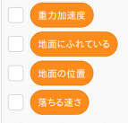
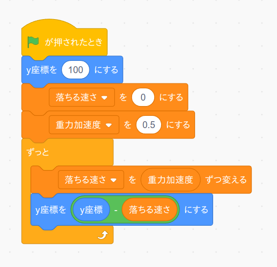
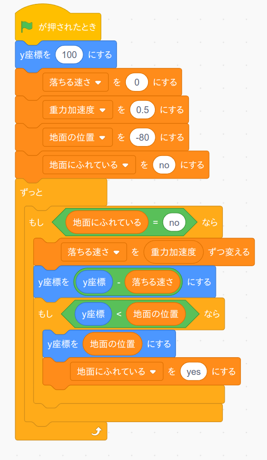

次に恐竜が高い場所にいるときに、下に向かって落下させるプログラムを作ります。
まず使用する変数を先に作っておきましょう。 変数メニューから「重力加速度」、「地面にふれている」、「地面の位置」、「落ちる速さ」という変数を作って下さい。
次に、「旗を押されたとき」ブロックをもう一つ追加してこのプログラムを作成します。
(注意) 前ページで作成したアニメーションのプログラムはそのままにしておいてください。
このプログラムでは地球の重力をシミュレートしています。 理科の授業で習ったように何か物を持ち上げて手をパッとはなすと、物は最初はゆっくり落ちるのですが、だんだん落ちる速さが早くなって行きます。落ちる速さが早くなる割合のことを"重力加速度"といいます。
そこでこのプログラムでも変数「落ちる速さ」の値を最初 0 にしておき、「ずっと」ブロックの中で変数「重力加速度」の値だけ少しずつ変数「落ちる速さ」の値を増やしています。 するとフワッとした感じで恐竜が落ちるようになります。
作成したら旗ボタンを押して動作確認して下さい。
ただこのままではいつまでも恐竜は落ち続けるので、地面に着いたら止まるようにします。 上のプログラムを次のように変更してください。
変数「地面にふれている」が"no"のときは上のプログラムと同じ様にして恐竜は落下するのですが、もし恐竜の縦方向の位置が変数「地面の位置」の値よりも下になった場合は変数「地面にふれている」を"yes"にして落下を止めるという内容になっています。
では変更したら旗ボタンを押して動作確認して下さい。